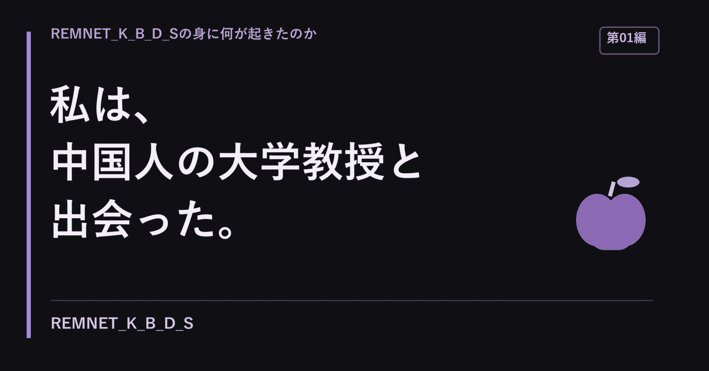

記事 ／ 記事一覧REMNET_K_B_D_S
記事 ／ 記事一覧
記事一覧
関心のあるテーマについて、考えたこと・調べたことをまとめた文章。
記事を読む
2026-11-26 ／ 無料
大学の外から、研究倫理を調べています。――制度外の個人が、noteを始める理由
はじめまして。REMNET_K_B_D_Sです。 私は大学に所属する研究者でも、学生でもありません。 専門的な教育を受けてきたわけでもなく、学位や研究上の肩書も持っていません。最終学歴は中学校卒業。 それでも、知りたいことがあります。自分の経験を振り返り、分からない言葉…
2026-11-26 ／ 無料部分のみ ／ 続きはnoteで購入
REMNET_K_B_D_Sの身に何が起きたのか｜第01編：私は、中国人の大学教授と出会った。

著者：REMNET_K_B_D_S／価格：700円／Markdown・ZIP／Obsidian推奨 熊本のバス停で、困っていそうな外国人に声をかけた。 一緒に市電に乗り、拙い英語で話し、悪魔の音楽まで勧めた。 相手は、中国人の大学教授だった。 聖飢魔IIの『アダムの林檎…
2026-11-26 ／ 無料
解明することと、悪用されないことは別の問題だ。｜ミラーニューロンとAI研究から考える科学的知識と倫理
2026年11月26日 REMNET_K_B_D_S 2026年1月30日、私はとある研究者との私的なやり取りの中で、ミラーニューロンについて、こんなことを書いていた。 「だって、もし……本当に完全に解明されたら？ それって簡単に悪用されてしまうんじゃないの……？ 『良…
2026-11-21 ／ 無料
研究倫理という制度を、一般の人はどうやって知るのか？
知らなかった私が、疑問を持ってから調べ始めたこと

研究倫理を知らなかった私が、疑問を持ってから資料にたどり着くまで。制度の外側から、説明と同意、知識への入口を考えます。
関連する記録
研究倫理に関する記録は、こちらからご覧いただけます。